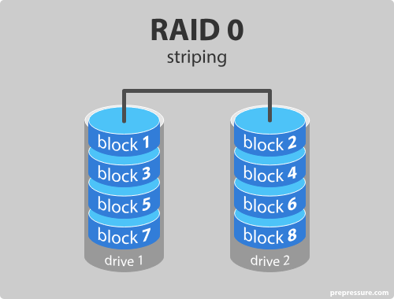
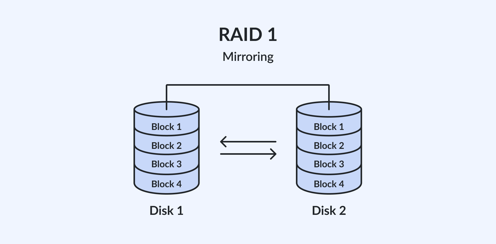
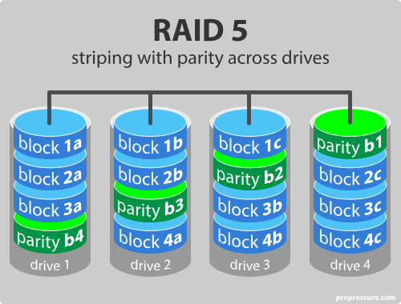
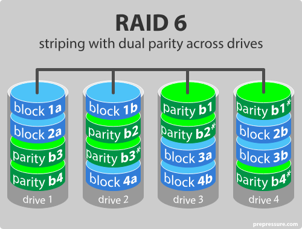
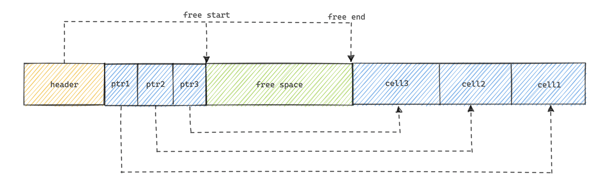
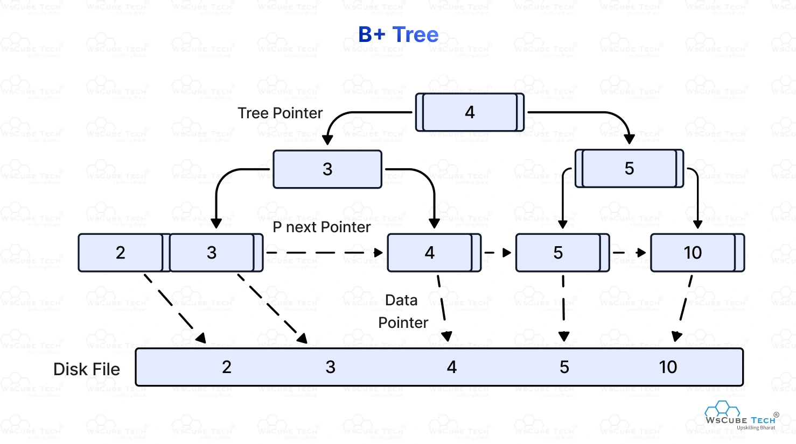
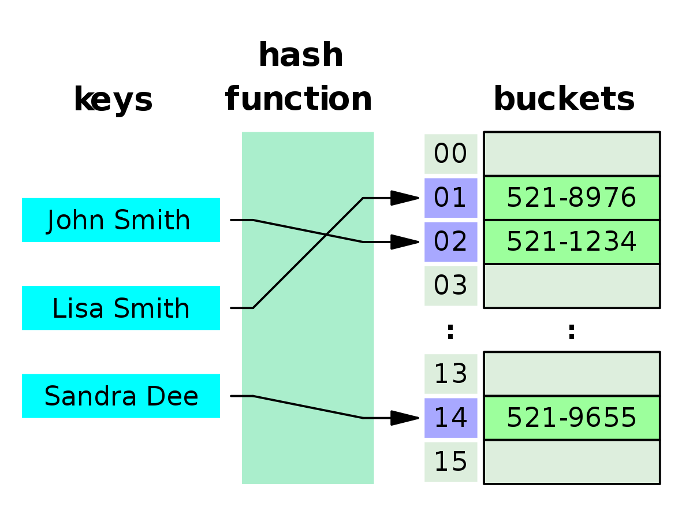

Hence a DBMS cannot rely on a single disk for performance or reliability.
RAID organizes multiple physical disks into a single logical disk.

Improved performance
no fault tolerance.
One disk fails, all data is lost.

Each disk has an exact copy on another disk.

Data is striped across disks
Parity information is also stored
Parity is distributed, not centralized
Can tolerate a single disk failure
Better storage efficiency than RAID 1
Write operations require updating data and parity.
Small writes are more expensive due to parity updates.

Similar to RAID 5
Stores two independent parity values
Can tolerate two simultaneous disk failures
Higher reliability
Higher overhead for writes
RAID 6 is becoming increasingly important as disk sizes grow. because disk rebuild times are longer, and a probability of a second failure during rebuild increases.
| RAID | Striping | Redundancy | Failures tolerated |
|---|---|---|---|
| RAID 0 | Yes | No | 0 |
| RAID 1 | No | Yes (mirror) | 1 |
| RAID 5 | Yes | Yes (parity) | 1 |
| RAID 6 | Yes | Yes (double parity) | 2 |
RAID doesn't understand tuples, files or indexes. It works with Blocks, Stripes and Disks.
Important consequences stated in the slides:
A tuple (or row) is a single record in a table
Database records (turples) can be of variable length or fixed length
A block does not store a fixed number of tuples
The DBMS must use a record organization mechanism inside the block
Common organizations:
br = ⌈ Number of tuples x Tuple size / Block size ⌉
A file is a collection of disk blocks, each file stores the tuples of a relation, blocks of a file are not necessarily stored contiguously on disk.
Logical adjacency != Physical adjacency
Tuples can be inserted, deleted and updated, can have variable length, etc. Therefore, the DBMS need a structure that:
A slotted page is a block organized into:

If a tuple changes size, the tupls can be moved inside the block, only the slot offset needs to be updated.
External references use: (block id, slot number) pairs, so they don't change when tuples move.
Avoiding updating indexes or pointers in other blocks.
On deletion, the slot is marked as free, its space becomes part of the free space region.
Allows efficient insertions and reduced fragmentation.
Tuples are not stored in any particular order inside the block.
Ordering must be provided by file organization or indexes.
Slotted pages are used both for heap files, sorted files and indexed files, since they are independent of query language or index type.
Definition: A heap file is a collection of blocks storing tuples in no particular order.
Operations:
Insertion: add the tuple to any block with enough free space, if none exist allocate a new block and add it to the file.
Deletion: remove tuple, free space is recorded in the block, no reordering performed.
Search: requires a linear scan of all blocks in the file, unless an index exists.
Very efficient insertions
Very inefficient searches
No odering guarantees
Heap files are suitable when access is mostly via indexes.
Definition: Tuples are stored sorted on a search key, and the file is physically ordered by that key.
Operations:
Insertion: Tuple must be placed in the correct sorted position, may require shifting tuples or creating overflow blocks.
Deletion: Remove tuple, may leave holes, does not automatically restore compactness.
Search: Efficient for equality search and range queries using binary search at block level.
Performance degrades as insertions and deletions occur.
Therefore periodic reorganization may be required.
This motivates the introduction of B +-tree later.
Definition: Tuples from multiple relations are stored together in the same file, based on a common clustering key.
Definition: A hash function is applied to a search key, the result determines the bucket (block), each bucket corresponds to one or more blocks.
Operations:
Limitations:
This is explicitly contrasted with ordered files and B+-trees indexes.
| Organization | Order | Insert | Search | Range queries |
|---|---|---|---|---|
| Heap | None | Fast | Slow | No |
| Sequential | Sorted | Slow | Fast | Yes |
| Hashed | Hash-based | Fast | Fast (equality) | No |
| Multitable | Clustered | Slow | Fast (joins) | Limited |
Searching heap files requires a linear scan, which can be expensive. therefore, indexes are auxiliary data structures used to speed up access to data
Can be compared to a library catalog, where you locate a book without scanning all shelves.
A data stucture that allows efficient retrieval of records based on the values of one or more attributes.
An index is stored in a separate file
It is smaller than the data file
It contains index entries, not full tuples.
(search-key value, pointer)
The search key is not necessarily the primary key.
A search key may or may not be unique.
These criteria are used to compare ordered vs hash indexes and justify index choices in exams.
Indexes improve access but increase maintenance cost.
Every insertion, deletion, or update of a record may require updating all indexes on that relation
therefore indexes speed up reads but slow down writes.
In an ordered index, index entries are stored sorted on the search-key value.
Important consequences:
Two roles of ordered indexes:
A clustering index is an index whose search key determines the physical order of the data file.
The data file is sequentially ordered on the search key The search key is often the primary key, but not necessarily.
THERE CAN BE ONLY ONE CLUSTERING INDEX PER FILE. because a file can only be physically ordered in one way.
A secondary index is an index whose search key specifies an order different from the sequential order of the file.
The data file is NOT ordered on the search key. Index entries point to records scattered throughout the data file.
Sequential scans using a secondary index are expensive.
Density is a property of ordered indexes.
Dense index: A dense index contains an index entry for every search-key value in the file.
If search keys are unique, one entry per record.
If search keys are not unique, one entry per distinct search-key value.
larger index, faster lookups, more maintenance overhead.
This ties sparse indexes directly to clustering indexes.
To find a record with search key k:
Find the index entry with the largest search-key value < K
Start a sequential scan from the pointed block
Smaller index, less maintenance overhead, slower lookup.
| Property | Dense | Sparse |
|---|---|---|
| Index entries | One per key | Some keys only |
| Index size | Larger | Smaller |
| Lookup speed | Faster | Slower |
| Maintenance | Higher | Lower |
| Requires sorted file | No | Yes |
Data file is not ordered on the search key, therefore sparse entries would not be sufficient to locate all records.
A B+-Tree index is an ordered index structure that:
Automatically reorganizes itself
Supports efficient insertion and deletion
Maintains balanced height
Reorganization is local
No global reorganization of the entire file is needed.
Let n be the maximum number of pointer in a node.
Tree Properties:
Internal (non-leaf) nodes:
Leaf nodes:
Root node:
A typical node has:

All actual data pointers are stored in the leaf nodes.
Internal nodes only store search keys and pointers.
This is what distinguishes B+-trees from B-trees.
Height grows logarithmically with the number of search keys.
If there are K search-key values, the height is at most ⌈log⌈n/2⌉(K)⌉
This is why very few nodes are accessed during searches. Disk I/O cost is low.

Hash indexes are appropriate when:
queries use only equality conditions.
range queries are not required.
These are not a general replacement for ordered indexes.
| Feature | Hash Index | Ordered Index (B+-tree) |
|---|---|---|
| Equality search | Very efficient | Efficient |
| Range queries | Not efficient | Efficient |
| Ordering | No | Yes |
| Maintenance | Simple | More complex |
This is a multi-stage process:
Starting with evaluation.
Logical operators:
Selection (σ) Projection (π) Join (⋈)
Physical operators:
Implementation of logical operators
Example:
Different join algorithms
Different access methods
A single logical operator may have multiple physical implementations.
Operator-at-a-time (materialization):
Each operator:
The next operator then reads that result.
High I/O cost, simple to implement.
Pipeline processing:
Operators produce output tuples one at a time
Output of one operator is passed directly to the next
Intermediate results may not be materialized.
This reduces I/O cost, but is more complex to implement.
Not all operators can be pipelined.
Some operators require all input before producing output (e.g., sorting, some aggregation operations). Blocking operators force materialization and break pipelines.
Choice of access method affects performance significantly.
EARLY SELECTION AND PROJECTION IS BENEFICIAL TO REDUCE DATA VOLUME EARLY IN THE PLAN.
A join as two input relations:
Outer relation R and inner relation S. And a join condition Equality or general condition
The terms outer and inner are algorithmic, not semantic.
The nested-loop join compares each tuple of the outer relation with each tuple of the inner relation
Very expensive, barely used in practice.
Instead of comparing tuple by tuple, compare block by block.
The outer relation is read block by block, and each block is compared with all blocks of the inner relation.
Still expensive if both relations are large Heavily dependent on which relation is chosen as outer and on the available memory.
The smaller relation should be the outer relation to minimize total I/O cost. Because they are reread fewer times, and the i/o cost is reduced.
If an index exists on the join attribute of the inner relation The DBMS can avoid scanning the entire inner relation.
For each tuple of the outer relation, an index is used to retrieve matching tuples from the inner relation.
Efficient when:
Poor performance if index access is expensive or unselective.
If both relations are sorted on the join attribute, they can be joined efficiently by scanning them in order.
Merge join requires both input relations to be sorted on the join attribute.
Scan both relations sequentially
Compare current tuples
Advance pointers based on comparison
Efficient for large relations
Supports range joins
May require sorting first
SORTING IS A BLOCKING OPERATION
If the join condition is equality, hashing can be used to partition relations and reduce comparisons.
One relation is hashed into buckets, and the other relation probes those buckets.
Build phase: Hash the smaller relation R into buckets in memory.
Probe phase: For each tuple in S, compute hash and probe corresponding bucket in R.
Requires memory for hash table, does not support range joins, but efficient for large relations with equality joins.
Cost is measured in terms of number of block transfers and number of seeks.
br = number of blocks in relation r bs = number of blocks in relation s M = number of blocks that fit in main memory
define tT (transfer time per block) and tS (seek time). Total cost example form: b* tT + S * tS.
Bitmap index scan - 1 bitmap per query, 1 bit per page
SELECT * FROM R WHERE age = 20 AND city = 'Lisbon';
What the DBMS does:
Why is this efficient?
Never behaves very badly compared to best alternative.
What's a bitmap
A bitmap is an array of bits
Bitmap indices - Where each distinct value of an attribute has a bitmap.
Why need a DELETED bitmap and a NULL bitmap?
Deleted / existence bitmap, marks whether a record is deleted or not, preventing deleted slots from appearing in query results. NULL bitmap intersects with other bitmaps to exclude NULL values from query results.